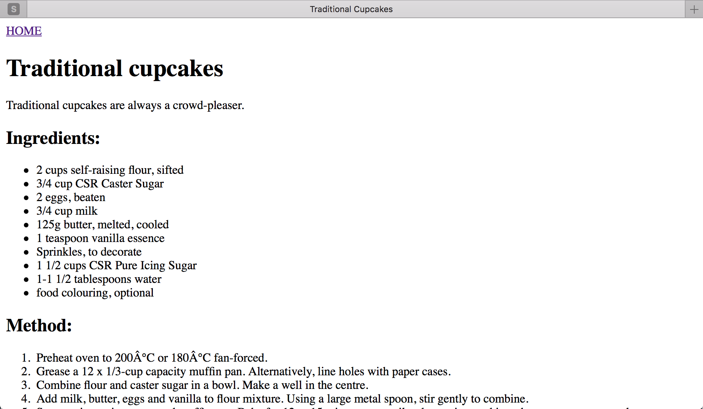
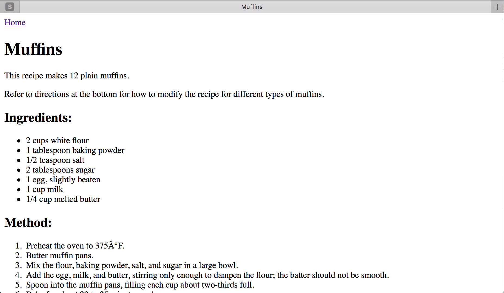

Etapy:
Step 5 - Formatowanie przepisów.
Nasza strona domowa wygląda zdecydowanie lepiej, więc teraz czas zająć się upiększaniem naszych podstron z przepisami.
Zacznijmy od traditional-cupcakes.html.
Tym razem nie podam Ci od razu gotowego kodu do skopiowania. Na początek mam dla Ciebie instrukcje do pogłówkowania i znalezienia samodzielnie odpowiedniego znacznika HTML.
- Tytuł dokumentu powinien brzmieć
Traditional Cupcakes. - Napis
Traditional Cupcakespowinien być nagłówkiem poziomu 1. Usuń linię-. - Przed nagłówkiem poziomu 1 umieść link powrotny do naszego
index.html. Link nazwijmyHOME. - Opis powinien być akapitem.
- Zamień
Ingredients:na nagłówek poziomu 2. Składniki powinny znajdować się na liście nieuporządkowanej. Methodrównież zamień na nagłówek poziomu 2, ale tym razem kolejne kroki przygotowania babeczek powinny być uporządkowaną listą.
W punkcie 4 możesz mieć trudność z krokiem 7. Podpowiemy, że wewnątrz elementów listy, również da się zagnieździć inne znaczniki HTML, w tym nawet inne listy.
Kiedy już skończysz, nasz plik powinien wyglądać tak:

Jeśli potrzebujesz wskazówek spójrz na poniższy kod traditional-cupcakes.html:
<html>
<head>
<title>Traditional Cupcakes</title>
<meta charset="UTF-8"/>
</head>
<body>
<a href="index.html">HOME</a>
<h1>Traditional cupcakes</h1>
<p>
Traditional cupcakes are always a crowd-pleaser.
</p>
<h2>Ingredients:</h2>
<ul>
<li>2 cups self-raising flour, sifted</li>
<li>3/4 cup CSR Caster Sugar</li>
<li>2 eggs, beaten</li>
<li>3/4 cup milk</li>
<li>125g butter, melted, cooled</li>
<li>1 teaspoon vanilla essence</li>
<li>Sprinkles, to decorate</li>
<li>1 1/2 cups CSR Pure Icing Sugar</li>
<li>1-1 1/2 tablespoons water</li>
<li>food colouring, optional</li>
</ul>
<h2>Method:</h2>
<ol>
<li>Preheat oven to 200°C or 180°C fan-forced.</li>
<li>Grease a 12 x 1/3-cup capacity muffin pan. Alternatively, line holes with paper cases.</li>
<li>Combine flour and caster sugar in a bowl. Make a well in the centre.</li>
<li>Add milk, butter, eggs and vanilla to flour mixture. Using a large metal spoon, stir gently to combine.</li>
<li>Spoon mixture into prepared muffin pan. Bake for 12 to 15 minutes, or until a skewer inserted into the centre comes out clean.</li>
<li>Stand in pan for 5 minutes before transferring to a wire rack to cool.</li>
<li>Make icing:
<ol>
<li>Sift icing sugar into a bowl.</li>
<li>Add food colouring and water.</li>
<li>Stir until smooth and well combined.</li>
</ol>
</li>
<li>Spoon icing over cupcakes.</li>
<li>Decorate with sprinkles.</li>
</ol>
</body>
</html>
Jak poszło?
Teraz przejdziemy do pliku muffins.html, zainspiruj się poprzednimi wskazówkami jak i poniższymi:
- Upewnij się, że dokument ma odpowiedni tytuł.
Variations:powinien być nagłówkiem poziomu 2.- Każda nazwa odmiany babeczki (tj. Blueberry, Pecan itp.) powinna być nagłówkiem poziomu 3.
- Ustaw kroki wariantów babeczek jako nieuporządkowaną listę.
Jeśli skończysz to Twój plik na pewno będzie wyglądać tak:

Popatrz na poniższy kod muffins.html jeśli potrzebujesz pomocy.
<html>
<head>
<title>Muffins</title>
<meta charset="UTF-8"/>
</head>
<body>
<a href="index.html">Home</a>
<h1>Muffins</h1>
<p>This recipe makes 12 plain muffins.</p>
<p>Refer to directions at the bottom for how to modify the recipe for different types of muffins.</p>
<h2>Ingredients:</h2>
<ul>
<li>2 cups white flour</li>
<li>1 tablespoon baking powder</li>
<li>1/2 teaspoon salt</li>
<li>2 tablespoons sugar</li>
<li>1 egg, slightly beaten</li>
<li>1 cup milk</li>
<li>1/4 cup melted butter</li>
</ul>
<h2>Method:</h2>
<ol>
<li>Preheat the oven to 375°F.</li>
<li>Butter muffin pans.</li>
<li>Mix the flour, baking powder, salt, and sugar in a large bowl.</li>
<li>Add the egg, milk, and butter, stirring only enough to dampen the flour; the batter should not be smooth.</li>
<li>Spoon into the muffin pans, filling each cup about two-thirds full.</li>
<li>Bake for about 20 to 25 minutes each.</li>
</ol>
<h2>Variations:</h2>
<h3>Blueberry Muffins:</h3>
<ul>
<li>Use 1/2 cup sugar.</li>
<li>Reserve 1/4 cup of the flour, sprinkle it over 1 cup blueberries, and stir them into the batter last.</li>
</ul>
<h3>Pecan Muffins:</h3>
<ul>
<li>Use 1/4 cup sugar.</li>
<li>Add 1/2 cup chopped pecans to the batter.</li>
<li>After filling the cups, sprinkle with sugar, cinnamon, and more chopped nuts.</li>
</ul>
<h3>Whole-Wheat Muffins:</h3>
<ul>
<li>Use 3/4 cup whole-wheat flour and 1 cup white flour.</li>
</ul>
<h3>Date or Raisin Muffins:</h3>
<ul>
<li>Add 1/2 cup chopped pitted dates or 1/3 cup raisins to the batter.</li>
</ul>
<h3>Bacon Muffins:</h3>
<ul>
<li>Add 3 strips bacon, fried crisp and crumbled, to the batter.</li>
</ul>
</body>
</html>
Super, stworzyliśmy 3 strony: jedną domową i dwie podstrony z przepisami.
Nasze strony są jednak trochę za proste, prawda? Większość stron kulinarnych posiada obrazki. Tym zajmiemy się w kolejnym kroku.